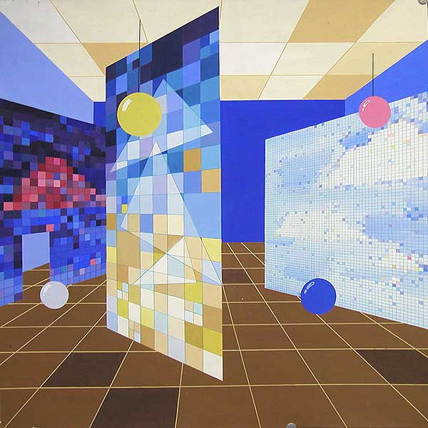

Экспозиционные структуры можно подразделить на три основных типа:
1. «Деловые» — научные, учебно-методические, торговые и т.п.
Роль художника в оформлении таких выставок сводится к созданию оптимальных условий для зрительного восприятия экспонатов, к которым относятся:
- соблюдение оптимального контраста экспонатов и фона (по принципу дополнительности),
- снятие утомления от осмотра выставки (введением цветовых акцентов или пауз, изменением колорита различных фрагментов выставки),
- организация пространства при помощи цвета (выявление оппозиции верха-низа, ритма конструктивных элементов и пр.)
- зонирование интерьера, указание направлений движения (для больших пространств),
- использование ассоциативности цвета (выбор цвета, соответствующего экспонату),
- правильное использование естественного и искусственного освещения.
2. Репрезентативно-деловые выставки
К ним относятся, например, выставки достижений народного хозяйства; показ культуры, экономики и промышленности какого-либо государства; тематические выставки типа «Электроника и высокие технологии» и др. Такие экспозиции выполняют не только информационную функцию, но и рекламную, и даже политическую — например, международные выставки ЭКСПО в столицах разных государств.
В таких экспозициях демонстрируются не только различные предметы, документы, тексты, но и образ государства, фирмы, предприятия-экспонента; здесь «в воздухе висят» идеи, читается стиль, ощущается фактура и колорит жизни той или иной страны, отрасли промышленности, фирмы. Здесь художник должен позаботиться о том, чтобы прочувствовать задачи и сверхзадачи экспозиции, найти средства для их выполнения (совместно с архитектором) и создать соответствующий колорит. В таких выставках уместно широкое использование плакатной графики, геральдики, скульптуры, декоративных конструкций, изделий прикладного искусства и дизайна.
3. Третий тип выставок — это так называемые вводные залы — пространство без экспонатов, заполненное (или не заполненное) формами и ограниченное какими-либо поверхностями. Это пространство воздействует на зрителя всеми своими атрибутами и средствами: композицией, пропорциями, массами, динамикой, материальными формами и, конечно, цветом. Цель экспозиции — внушить посетителю (зрителю) определенное отношение к предметам, выставленном в следующем зале (или залах), подготовить его к восприятию более «деловой» экспозиции.
Разновидность такого рода выставок — концептуальный интерьер, называемый также инсталляцией. Здесь визуализируется какая-либо идея («концепт»), нередко парадоксальная или абсурдная, но возможно также — вполне серьезная. Средства, которыми располагает инсталляция — пространство, форма, свет, фактуры, цвет. Используются также живопись, графика, скульптура и любые «внехудожественные» предметы (отходы производства, металлический лом, ящики, бутылки и пр.). Выбор типа цветовой композиции, колорита, освещения целиком подчиняется задаче внушения зрителю определенной идеи, чувства, ощущения.
Иллюстрации к статье
Студенческие работы.
